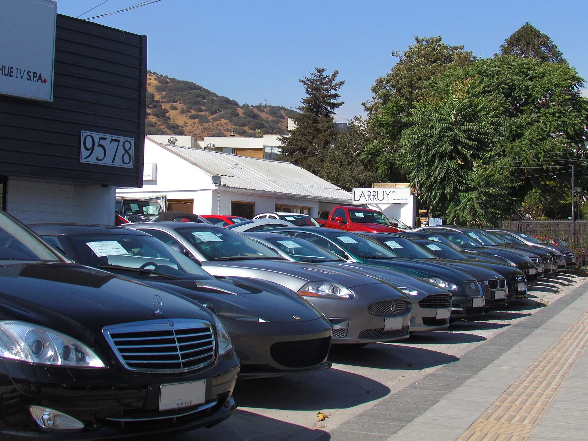
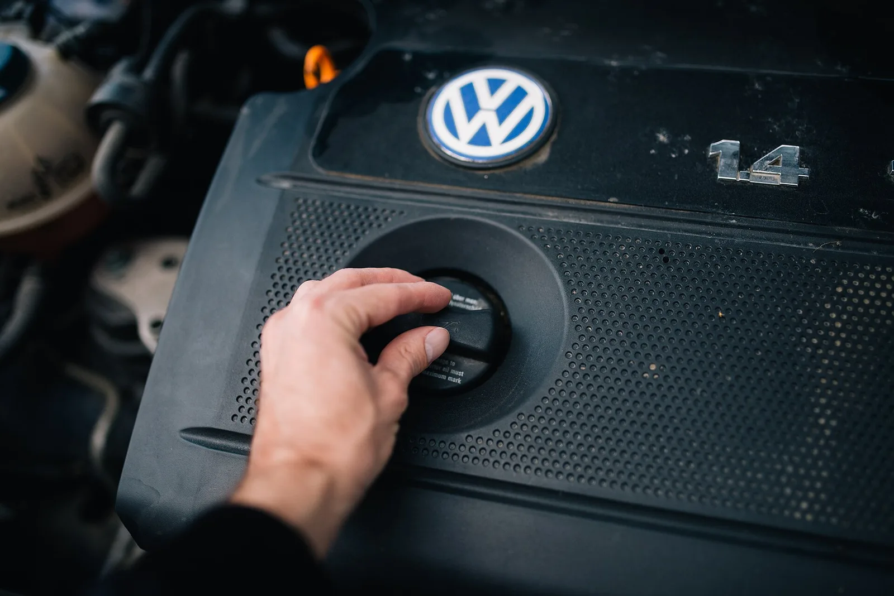
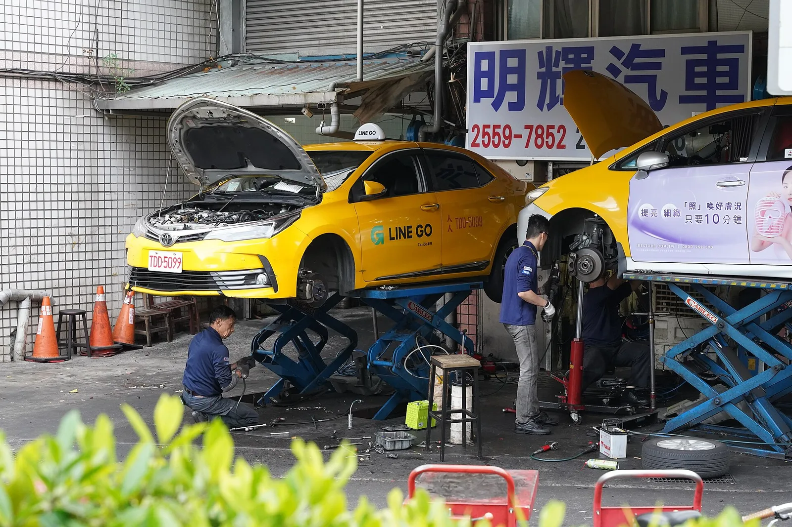

▲ 중고차 계약 전 반드시 확인해야 할 서류가 바로 성능·상태점검기록부다 ⓒ Wikimedia Commons
중고차 계약서에 도장을 찍기 전, 판매자가 건네는 서류 한 장을 그냥 넘기는 경우가 많다. 바로 성능·상태점검기록부다.
이 서류는 선택사항이 아니라 자동차관리법이 정한 법정 의무서류다. 매매업자는 중고차를 팔 때 이 기록부로 차량 상태를 구매자에게 반드시 고지해야 한다. 문제는 항목이 많고 용어가 낯설어 사고이력란에 '없음'만 보고 넘어가는 경우가 대부분이라는 점이다.
1. 성능·상태점검기록부란 — 왜 법정 의무서류인가
중고차 매매업자는 자동차관리법에 따라 차량을 판매하기 전 구조·장치의 성능과 상태를 점검해 이를 서면으로 고지할 의무가 있다. 이때 작성되는 서류가 중고자동차성능·상태점검기록부(자동차관리법 시행규칙 별지 제82호서식)다.
| 구분 | 내용 |
|---|---|
| 법적 근거 | 자동차관리법 — 매매업자의 성능·상태 고지 의무 |
| 발급 주체 | 등록된 자동차성능·상태점검자(정비업체·성능점검전문업체 등) |
| 유효기간 | 점검일로부터 120일 이내 |
| 포함 서류 | 성능·상태점검기록부 + 자동차 가격조사·산정서(선택) + 점검 당시 촬영 사진 |
| 고지 방식 | 매매업자가 구매자에게 원본을 직접 제공, 사본 보관 의무 |
📍 발급일이 오래된 기록부는 의심해야 한다
기록부 유효기간은 120일이다. 이 기간이 지났는데도 그대로 붙어있는 기록부를 내민다면, 그 사이 차량 상태가 바뀌었을 가능성을 의심해야 한다. 계약 전 점검일자부터 먼저 확인하는 습관이 필요하다.
기록부 양식과 항목별 기준은 국가법령정보센터에서 직접 확인할 수 있다. 자동차관리법 시행규칙 확인
2. 항목별 읽는 법 — 뭘 봐야 하나
기록부는 크게 차량 기본정보, 사고·수리 이력, 장치별 점검 결과로 나뉜다. 각 장치는 '양호·불량·교환·수리' 같은 판정 표기로 정리된다.
| 항목 | 확인할 것 |
|---|---|
| 원동기(엔진) | 오일누유, 냉각수누유, 소음·진동, 배기가스 상태 |
| 변속기 | 오일누유, 작동상태(변속충격·소음 여부) |
| 동력전달 | 등속조인트(추진축) 상태 |
| 조향장치 | 스티어링 기어박스·동력조향 오일누유 |
| 제동장치 | 브레이크액 누유, 배력장치 작동상태 |
| 전기장치 | 발전기 충전상태, 시동모터 상태 |
| 주행거리계 | 정상·비정상(변조 의심 여부) |

▲ 원동기 항목은 오일·냉각수 누유 여부와 소음·진동을 중심으로 점검한다 ⓒ Wikimedia Commons
✅ 계약 전 30초면 되는 확인
· 차대번호(VIN)가 차량 실물·등록증과 일치하는지 대조
· 주행거리가 계기판 표시값과 같은지 확인
· '양호' 판정만 훑지 말고 '교환'·'수리' 표기가 있는 항목을 따로 체크
· 점검일자가 120일 이내인지 확인
3. 사고이력·주요골격 손상 — 가장 많이 오해하는 부분
기록부에서 가장 중요하면서도 가장 많이 오해하는 항목이 사고이력이다. '사고 없음'이라고 표기돼 있어도 외판을 통째로 교환한 적이 있을 수 있다 — 기준이 그렇게 정해져 있기 때문이다.
| 구분 | 해당 부위 | 사고 인정 조건 |
|---|---|---|
| 주요골격 | 프론트패널, 크로스멤버, 인사이드패널, 사이드멤버, 휠하우스, 필러패널, 대시패널, 트렁크플로어, 리어패널 등 | 판금·용접수리 또는 교환 시 사고로 인정 |
| 골격 특례 부위 | 쿼터패널, 루프패널, 사이드실패널 | 절단·용접한 경우에만 사고로 인정 (단순 판금은 제외) |
| 외판 부위 | 후드, 프론트펜더, 도어, 트렁크리드, 범퍼 | 판금·용접수리·교환 모두 '단순수리' — 사고에 포함 안 됨 |
📍 '무사고'와 '외판 무교환'은 다른 말이다
기록부상 '사고 없음'은 주요골격이 온전하다는 뜻일 뿐, 범퍼·도어·펜더 등 외판을 교환한 적이 없다는 뜻은 아니다. 실제로 접촉사고로 문짝이나 펜더를 새 것으로 갈았어도, 골격이 멀쩡하면 기록부의 사고이력란은 '없음'으로 남는다. 외판 교환 여부는 별도의 '수리' 표기를 따로 확인해야 한다.

▲ 주요골격 손상 여부는 차량을 리프트로 들어 올려 하부까지 확인해야 정확히 판단할 수 있다 ⓒ Wikimedia Commons
따라서 골격 손상이 걱정되는 매물이라면, 기록부의 사고이력란만 볼 게 아니라 외판 수리 항목을 함께 살피고, 가능하다면 구매 전 별도로 정비소 리프트에 올려 하부를 직접 확인하는 것이 안전하다.
4. 허위 기재 시 보상 — 성능점검 책임보험
기록부 내용과 실제 차량 상태가 다르면 구매자는 손해를 배상받을 수 있다. 이를 뒷받침하는 것이 성능·상태점검 책임보험이다.
✅ 성능점검 책임보험 핵심
· 보장 기간: 자동차 인도일로부터 30일 또는 주행거리 2,000km 중 먼저 도래하는 시점까지
· 보장 범위: 기록부와 실제 상태가 달라 발생한 손해 — 주요골격·외판·원동기·동력전달 등 점검 항목 전반
· 가입 의무: 자동차관리법에 따라 성능점검자·매매업자가 의무 가입
· 청구 방법: 문제 발견 시 보증 기간 내 보험사(또는 매매업자)에 클레임 접수
| 구분 | 내용 |
|---|---|
| 형사처벌 | 2년 이하 징역 또는 2천만 원 이하 벌금 |
| 행정처분 | 자동차매매업 등록취소 또는 최장 6개월 영업정지 |
| 민사책임 | 구매자에 대한 손해배상 책임 |
| 보험 보상 | 성능점검 책임보험을 통한 수리비 등 실손 보상 |
성능·상태점검 책임보험의 보장 범위와 청구 절차는 국토교통부 산하 자동차매매정보 통합관리 사이트에서 확인할 수 있다. 성능점검 책임보험 안내 바로가기
📍 처벌 수위는 낮다는 지적도 있다
소비자단체 조사에 따르면 실제 허위 기재 적발 건수 대비 형사처벌까지 이어지는 사례는 많지 않다는 지적이 꾸준히 나온다. 그만큼 구매자 스스로 인도 후 30일·2,000km 이내에 이상 여부를 빨리 확인해 보증기간 안에 클레임을 넣는 것이 실질적으로 가장 확실한 대응이다.
5. 점검자 확인 방법 — 누가 점검했는지도 확인해야 한다
기록부의 신뢰도는 결국 '누가 점검했는가'에 달려 있다. 등록되지 않은 곳에서 형식적으로 발급된 기록부는 내용을 그대로 믿기 어렵다.
✅ 점검자·발급처 확인 방법
· 기록부 하단의 점검자 성명·서명(날인)이 실제로 기재돼 있는지 확인
· 점검을 수행한 업체명·주소·연락처가 기록부에 명시돼 있는지 확인
· 한국자동차진단보증협회(KAIWA) 등 조회 서비스로 발급 이력 대조 가능
· 매매업자가 아닌 제3의 등록된 성능점검업체 발급분인지 확인하면 신뢰도가 더 높음
기록부 발급 이력은 한국자동차진단보증협회(KAIWA) 조회 페이지에서 확인할 수 있다. 성능·상태점검기록부 조회 바로가기
▲ 점검자가 직접 엔진룸을 열어 확인한 결과가 기록부에 항목별로 남는다 ⓒ Wikimedia Commons
6. 계약 전 최종 체크리스트
✅ 계약서에 도장 찍기 전 순서대로
1. 점검일자 120일 이내인지 확인
2. 차대번호·주행거리가 실차와 일치하는지 대조
3. 사고이력란과 외판 수리 항목을 따로따로 확인
4. 원동기·변속기 누유 여부 등 장치별 판정 확인
5. 점검자 성명·서명과 발급처가 기재돼 있는지 확인
6. 계약서에 성능점검 책임보험 가입 여부 명시돼 있는지 확인
7. 인수 후 30일·2,000km 이내 이상 발견 시 즉시 클레임 접수
7. 요약
중고자동차성능·상태점검기록부는 자동차관리법이 정한 법정 의무서류로, 점검일로부터 120일 이내에만 유효하다. 매매업자는 이 서류로 차량 상태를 반드시 구매자에게 고지해야 한다.
사고이력 표기는 '주요골격' 손상만을 기준으로 한다. 프론트패널·크로스멤버 등 주요골격을 판금·용접·교환하면 사고로 표기되지만, 후드·펜더·도어·범퍼 같은 외판 부위는 교환해도 '단순수리'로 분류돼 사고이력에 잡히지 않는다. '무사고'라는 표기만 보지 말고 외판 수리 항목을 따로 확인해야 하는 이유다.
기록부와 실제 상태가 다르면 성능점검 책임보험으로 인도일로부터 30일 또는 2,000km 이내 보상받을 수 있고, 허위·미고지 매매업자는 2년 이하 징역 또는 2천만 원 이하 벌금과 함께 영업정지·등록취소 처분을 받을 수 있다. 점검자 성명과 발급처, KAIWA 조회를 통한 검증까지 마치면 계약 전 확인 절차는 마무리된다.